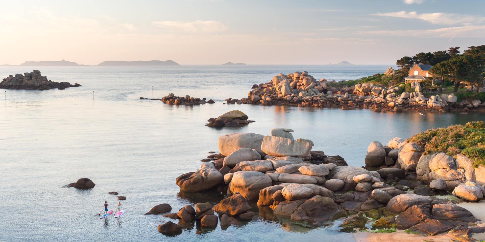
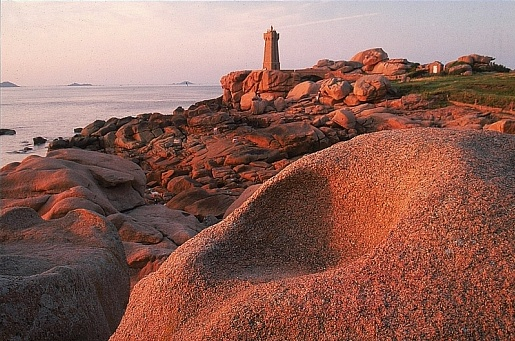

- Identification table — Porcini and Lookalikes:
| Feature | Boletus edulis (edible) | Bitter Bolete Tylopilus felleus (bitter, inedible) | Devil’s Bolete Rubroboletus satanas (toxic) |
|---|---|---|---|
| Cap | Chestnut-brown, greasy when moist | Tan to brown | Pale buff with red flush |
| Pores | White→olive, do not bruise blue | Pinkish pores | Yellow pores bruise blue rapidly |
| Stipe | Fat, white with pale reticulation near top | Pronounced dark reticulation | Often bulbous, red/orange tones |
| Flesh | White, no color change | White, very bitter taste | Whitish→blues when cut |
Safety: spit taste test for bitterness only for T. felleus by experts; never rely solely on bruising; if uncertain, do not consume.
- Identification table — Chanterelle and Lookalikes:
| Feature | Chanterelle (edible) | False Chanterelle H. aurantiaca (inedible) | Jack-o’-lantern O. illudens (toxic) |
|---|---|---|---|
| Gills | Blunt, forked ridges | True thin gills | True sharp gills, often bioluminescent faintly |
| Smell | Fruity/apricot | Weak to none | Unpleasant, fungal |
| Growth | Scattered | Scattered in litter | Dense clusters on wood |
Safety: collect singly formed, blunt-ridged fruitbodies; never eat raw; consult local mycology clubs.
- Identification table — Berries and Lookalikes:
| Feature | Bilberry (edible) | Black Crowberry Empetrum nigrum (edible but bland) | Deadly Nightshade Atropa belladonna (toxic) |
|---|---|---|---|
| Habitat | Acidic heath/wood | Coastal heath/bogs | Disturbed woodland edges (scarce NW France) |
| Fruit flesh | Purple throughout | Pale/greenish | Juicy, pale, large shiny berries |
| Leaves | Small, toothed | Tiny needle-like | Large, soft, entire |
Safety: never consume if unsure; avoid solitary large black berries on tall soft-leaved plants (possible nightshade); stick to known shrubs.


- Ancient Roots: The Armorican Massif is composed of Precambrian to Paleozoic rocks (gneisses, schists, granites) formed 600–300 million years ago during the Cadomian and Variscan orogenies; later uplift and differential erosion sculpted today’s peninsulas and headlands. Field evidence: folded metamorphics, quartz veins, and jointed granite tors.
- Côte de Granit Rose (Ploumanac’h to Trégastel): Iconic salmon-pink orthoclase-rich granite; rounded tors carved by spheroidal weathering and wave action into natural sculptures (e.g., Napoleon’s Hat, the Bottle); feldspar crystals impart the rosy hue. Traveler tip: GR34 coastal path at golden hour for color; avoid climbing wet, algae-slick surfaces.
- White Chalk and Flint: Upper Cretaceous chalk (100–66 Ma), same formation as England’s Dover, with hard flint nodules; coastal erosion has carved arches (Porte d’Aval) and the needle (Aiguille). Processes: marine undercutting, rainwater dissolution, frost shattering. Safety: rockfall risk after heavy rain—keep to marked paths and heed closure signs.
- Tidal Island on Silt: Granite core capped by medieval abbey rising from vast silty-sand flats; extreme macrotidal range up to ~14–15 m during equinoctial springs; tidal currents race across flats like “a galloping horse.” Sediment sources: rivers Sée, Sélune, Couesnon and coastal transport; restoration projects re-mobilize sediments to prevent permanent silting. Safety: guided crossings only—quicksand patches and rapidly advancing water.
- Layered Time: Near Saint-Jean-de-Luz–Zumaia (cross-border continuum), alternating sandstone, marl, and limestone beds (Cretaceous–Paleogene) now tilted and exposed as ribbed pavements; some sequences span the K–Pg boundary with microfossils and iridium-rich layers in regional contexts. Visit on negative tides for ribbed “books” of rock; watch for slippery algae and surges.
- Macrotidal Coasts: Brittany and Normandy host among the world’s highest tidal ranges (commonly 8–12 m, peaks ~14–15 m near Mont Saint-Michel); spring tides around equinoxes expose kilometers of seabed, revealing kelp holdfasts, oyster reefs, and labyrinthine rockpools. Traveler timing: consult SHOM tide tables; best intertidal exploration on spring lows with calm swell; return before flood—tide rises fastest in final hours.
- Tidal Bore Notes: Localized bores can form in the Sée and Sélune rivers that empty into the bay during strong spring tides; a small moving wall of water travels upriver. Viewpoints: upstream bends at safe distances; never stand on muddy inner banks.
- Winter Lows (Nov–Mar): Deep Atlantic depressions drive gale-force winds, long-period swells, and spectacular breakers (10+ m significant wave height in extremes) at capes like Pointe du Raz and Penmarc’h; coastal overwash reshapes dunes, kelp detaches in rafts fueling strandline food webs. Safety: observe from clifftop barriers; rogue waves possible even in fair weather.
- Sparkling Plankton: Summer–early autumn calm nights can bring bioluminescent dinoflagellates (e.g., Noctiluca, Alexandrium spp.) that flash when disturbed; footprints and breaking waves glow electric-blue. Where/When: sheltered coves (Crozon, Morbihan Gulf) on moonless warm nights after blooms. Safety: avoid swimming during harmful algal bloom advisories.
- North Atlantic Drift moderates climate along Brittany and Normandy: cool summers, mild winters, early-flowering gorse and year-round sea kale; fog and sea haar can roll in quickly on temperature contrasts—carry layers and a whistle in cliffs/haze.
- Structure: Distinct vertical zones—from splash belt with black lichens (Verrucaria) to high-shore barnacles (Chthamalus), mid-shore wracks (Fucus spp.), and low-shore kelps (Laminaria); tidepools harbor anemones (Actinia equina), blennies, shrimps, and nudibranchs. Productivity: among Europe’s richest due to nutrient mixing and broad exposure times. Tips: explore 1–2 hours before lowest spring tide; wear grippy shoes; practice “leave rocks as found” to protect sheltering fauna.
- Threats/Protection: Oil spills, trampling, warming seas; many sites within Natura 2000 and regional reserves (Iroise Marine Park). Follow no-take and no-bait-digging rules where posted.
- Ecology: Subtidal forests 0–15 m depth create 3D habitat, damping waves and turbocharging primary production; canopy (Laminaria digitata/hyperborea) supports grazers (limpets, sea urchins), predators (wrasse, conger eels), and juvenile fish nurseries. Seasonality: peak biomass late winter–spring; summer epiphytes and fish abundance. Access: glass-bottom boat tours (e.g., Molène), advanced snorkel/dives on neap tides with local guides; currents can be strong—only with certified operators.
- Management: Rotational seaweed harvesting in Brittany under quotas; emerging kelp aquaculture; monitor urchin barrens under warming scenarios.
- Services: Carbon sequestration (blue carbon), sediment stabilization, water clarity, nursery habitat for pipefish, syngnathids, scallops; hosting epiphytic algae and invertebrates. Season: lushest May–September; winter dieback forms wrack lines benefiting dune insects. Visitor code: never anchor or drag kayaks across beds; use mooring buoys; observe seahorses only with licensed scientists—collection illegal.
- Dynamics: Mixing of fresh and salt water forms turbidity maxima rich in plankton; mudflats teem with lugworms, ragworms, bivalves feeding migratory shorebirds (dunlins, curlews, redshanks). Nursery: juvenile bass, mullet, sole; saltmarshes (Salicornia, Atriplex, Spartina) cushion storm surges. When to visit: autumn and late winter high-tide roost watches; use hides and keep dogs leashed. Conservation: Ramsar sites; threats include dredging, pollution, and development—support reserve visitor centers.
- Forests: Beech–oak canopies with spring ephemerals (wood anemone, bluebell), rich fungal networks; deadwood supports saproxylic beetles and woodpeckers. Bocage: a mosaic of small fields bounded by hedgerows (hawthorn, blackthorn, hazel, oak standards) and ditches; microclimate refuges for bats, butterflies, amphibians. Travel tips: walk green lanes at dawn for birdsong; respect private land; cider routes welcome visitors to traditional orchards underpinning biodiversity.
- Threats/Actions: Hedgerow removal reduces connectivity; agri-environment schemes pay farmers to maintain hedges; volunteer days plant and lay hedges—ask local parks.
- Zonation: Embryo dunes (sea rocket, Cakile maritima), foredunes (marram), gray dunes (lichens, mosses, orchids), and slacks (wet depressions with rare flora); dynamic under storm/wind regimes. Wildlife: natterjack toad breeding in slacks; ground-nesting larks and terns. Visiting: stick to boardwalks; avoid slacks March–July; evening skylark song is a highlight.
- Management: Fencing, invasive plant removal, and wrack retention to rebuild dunes; community beach cleans keep plastics from entangling marram.
- Seabird Strongholds: Granite stacks provide predator-reduced ledges for gannets, guillemots, razorbills, puffins; strong currents bring forage fish; marine reserve status restricts landings. Viewing: regulated boat tours Apr–Aug; bring layers—wind-chill significant even in summer; sea state dictates departure.
- Seal and Dolphin Corridors: Tidal races around Ouessant concentrate plankton and fish; look for feeding frenzies (gannets diving, dolphins corralling). Safety: working waters—keep clear of fishing gear and navigation channels.
Practical Travel Essentials: - Tides: Always check local tide tables and swell forecasts; plan out-and-back routes with a margin of safety; flat beaches can flood from behind. - Footwear: Non-slip soles for intertidal; ankle support on granite paths; avoid flip-flops on reefs. - Binoculars/Scopes: 8–10x binoculars for general use; 20–60x scope ideal for cliff birds and seals at haul-outs. - Seasons: Spring (Apr–Jun) for breeding seabirds and wildflowers; late summer (Jul–Sep) for calm seas, kelp snorkeling, bioluminescence; winter (Nov–Feb) for storm-watching and migratory waders. - Ethics: Observe wildlife distances (seals 100 m, cetaceans 100–300 m); no drones over colonies; take only photos and permitted shellfish within local limits.
Fonti e Riferimenti: Office Français de la Biodiversité; Parc naturel marin d’Iroise; Réserve Naturelle des Sept-Îles (LPO); Ifremer (Institut français de recherche pour l’exploitation de la mer); SHOM tide tables; BRGM (Bureau de Recherches Géologiques et Minières) geology notes; IUCN Red List assessments (accessed 2023–2024); local park visitor centers and management plans.